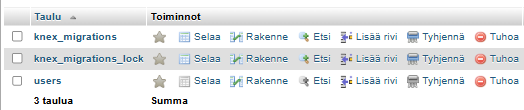

Migrations
Yleistä
Migraatiotyökalulla voidaan toteuttaa tietokanta siten, että muutokset ovat hallittuja ja ne on helppo toistaa uudestaan. Tällä kurssilla käytämme Knex-työkalua migraatioiden tekemisessä MySQL-tietokantaan.
Docker
Tehdään paikallinen Docker-ympäristö tietokannalle. Tee itsellesi alikansio docker ja tallenna sinne tiedosto docker-compose.yml
version: '3.1'
services:
db:
image: mysql:8.0.27
restart: always
environment:
MYSQL_ROOT_PASSWORD: mypass123
ports:
- 3306:3306
phpmyadmin:
image: phpmyadmin
restart: always
ports:
- 8081:80
Avaa kansiossa komentokehote (terminal) ja suorita komento
docker-compose up -d
Näet phpMyAdmin-sivun osoitteessa http://localhost:8081. Käyttäjätunnus on root ja salasana yllä määritelty mypass123.
Lisää phpMyAdminin avulla itsellesi tietokanta notesdeno_db.
Knex
Tehdään tietokannan migraatiot projektin alle. Lisää notesdemo-projektille alikansio database. Avaa komentokehote tässä kansiossa.
npm init npm install knex --save
Tehdään seuraavaksi knexfile.js suorittamalla komento
npx knex init
Korvataan oletustiedot käyttämällämme Docker-ympäristön tiedoilla
module.exports = {
development: {
client: 'mysql2',
connection: {
host: 'localhost',
user: 'root',
password: 'mypass123',
database: 'notesdemo_db'
}
}
}
Asenna mysql2
npm install mysql2 --save
Taulujen luonti
Luo uusi migraatio-tiedosto suorittamalla komento
npx knex migrate:make create_notesdb
Määritellään aluksi users-taulu:
exports.up = function(knex, Promise) {
return knex.schema
.createTable('users', t => {
t.increments('id').primary()
t.string('username').notNullable().unique()
t.string('email').notNullable().unique()
t.string('password').notNullable()
t.timestamps(false, true)
})
};
exports.down = function(knex, Promise) {
return knex.schema
.dropTableIfExists('users')
};
Kokeile ajaa migraatio:
npx knex migrate:latest
Tietokannassa tulisi nyt olla taulu users sekä migraatioille luodut taulut.

Voit peruuttaa muutokset suorittamalla komennon
npx knex migrate:rollback
Lisätään mukaan toinen taulu notes. Taulussa notes on luotu relaatio users-tauluun. Taulujen luonti ja poistaminen tulee tehdä oikeassa järjestyksessä. Koska notes tarvitsee users-taulua tulee notes tehdä ensin. Samoin ensin tulee poistaa notes ja sitten vasta users.
exports.up = function(knex, Promise) {
return knex.schema
.createTable('users', t=> {
t.increments('id').primary()
t.string('username').notNullable().unique()
t.string('email').notNullable().unique()
t.string('password').notNullable()
t.timestamps(false, true)
})
.createTable('notes', t => {
t.increments('id').primary()
t.string('content').notNullable()
t.datetime('date').notNullable()
t.boolean('important').notNullable()
t.integer('user_id').unsigned().references('id').inTable('users').notNull()
.onDelete('cascade')
})
};
exports.down = function(knex) {
return knex.schema
.dropTableIfExists('notes')
.dropTableIfExists('users')
};
Seeds
Tietokantaan voidaan lisätä tietoja ajamalla sinne seed-tiedostot. Luodaan uusi tyhjä tiedosto:
npx knex seed:make 01_users
Tiedoston sisällöksi tulee kaksi testikäyttäjää
exports.seed = function(knex, Promise) {
return knex('users').del()
.then(function () {
return knex('users').insert([
{id: 1, username: 'tester1', email: 'tester1@test.com', password: "salasana"},
{id: 2, username: 'tester2', email: 'tester2@test.com', password: "salasana"},
]);
});
};
Kokeile ajaa tiedosto näin:
npx knex seed:run
Nyt salasanat eivät ole vielä salattu. Asennetaan bcryptjs-kirjasto jonka avulla voidaan korvata "salasana" salatulla merkkijonolla.
npm install bcryptjs --save
Lisää tiedoston alkuun salaus ja korvaa "salasana" muuttujalla hashedPassword.
const testPassword = "salasana"
var bcrypt = require('bcryptjs');
var salt = bcrypt.genSaltSync(10);
var hashedpassword = bcrypt.hashSync(testPassword, salt);
seed-tiedosto ajetaan näin:
npx knex seed:run
Lisää toinen tiedosto 02_notes ja lisää siellä kolme muistiinpanoa. seed-tiedostot ajetaan aakkosjärjestyksessä, suunnittele nimeäminen tietokannan rakenteen mukaisesti.
exports.seed = function(knex) {
// Deletes ALL existing entries
return knex('notes').del()
.then(function () {
// Inserts seed entries
return knex('notes').insert([
{
id: 1,
content: "Keep it fast - optimize assets, minimize requests, use caching",
date: new Date("2025-11-10T17:30:31.000Z"),
important: true,
user_id: 1
},
{
id: 2,
content: "Make it accessible - semantic HTML, proper contrast, keyboard-friendly",
date: new Date("2025-11-10T18:39:34.000Z"),
important: false,
user_id: 1
},
{
id: 3,
content: "Design for all devices - responsive layout, fluid elements, test on real screens",
date: new Date("2025-11-10T19:20:14.000Z"),
important: true,
user_id: 2
}
]);
});
};
Jos haluat ajaa vain tietyn seed-tiedoston niin se onnistuu näin:
npx knex seed:run --specific=filename.js